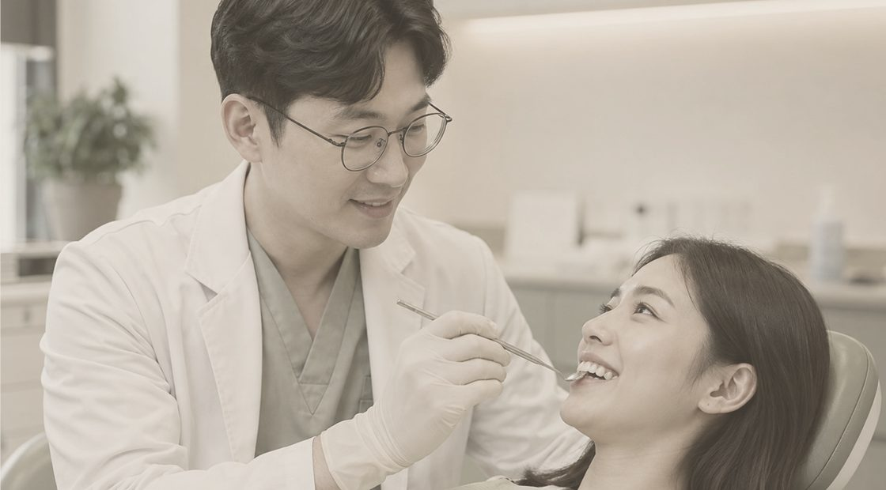
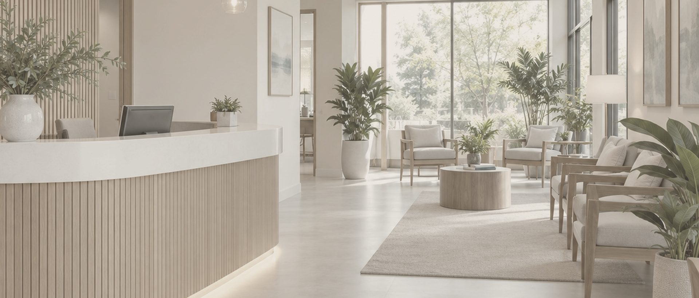
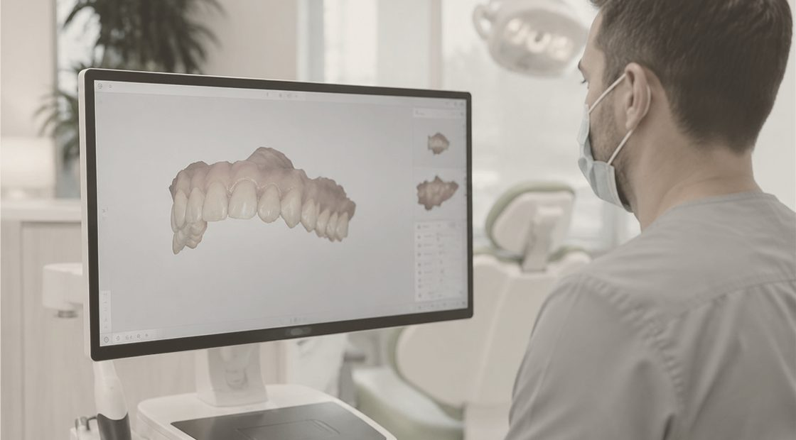
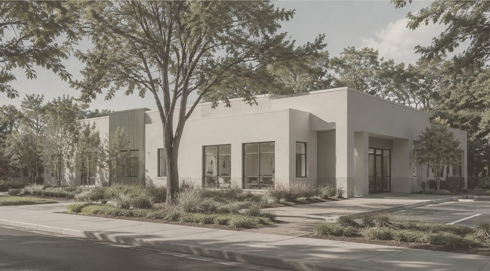
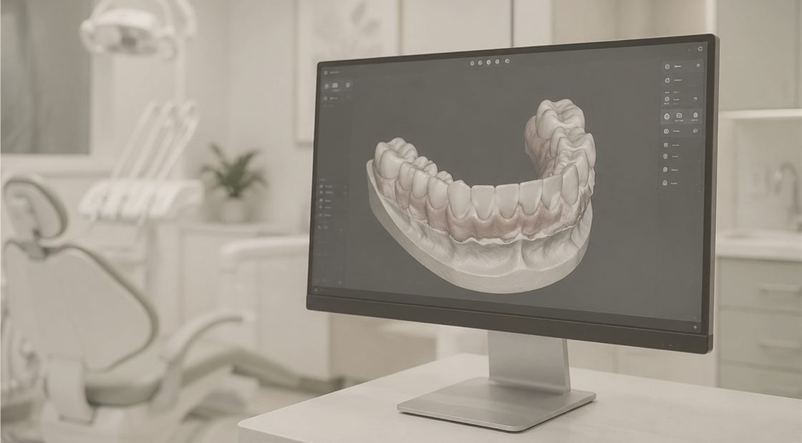

01
바디 컨투어링에 집중합니다.
다양한 항목을 넓게 다루기보다 체형과 실루엣을 깊이 연구합니다.
선택의 수보다 한 번의 완성도를 중요하게 생각합니다.

THE GYEOL:ON STANDARD
체형을 읽는 상담에서 시작해 필요한 만큼의 계획을 세웁니다. 변화가 과하지 않도록 균형을 지키며, 시술마다 같은 기준을 적용합니다.
서해대학교 의학과 졸업
한빛대학교병원 수련의 과정
전 온결메디컬센터 원장
대한비만미용학회 정회원

WHY GYEOL:ON

다양한 항목을 넓게 다루기보다 체형과 실루엣을 깊이 연구합니다.

피부와 지방층의 상태를 확인하고 에너지를 세밀하게 배분합니다.

첫 상담의 판단이 마지막 과정까지 이어지도록 전담합니다.

필요한 부위에 충분한 시간을 배정해 계획의 밀도를 높입니다.